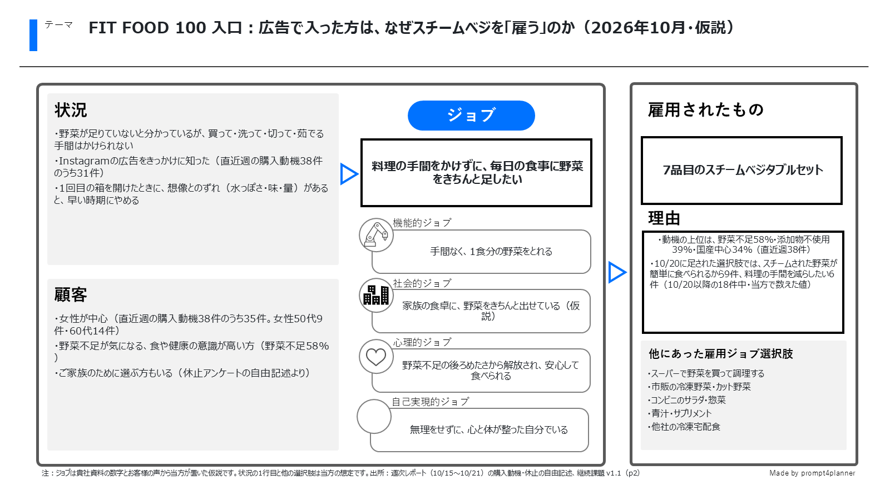
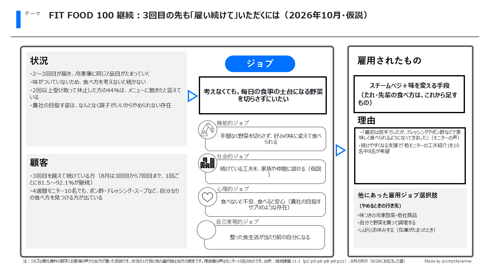

FIT FOOD 100 ジョブ理論の整理（2026年10月・仮説）
ご相談への回答（2026年10月22日版）の別紙です。ジョブは貴社資料の数字とお客様の声から当方が置いた仮説です。作成: 社外アイデア企画室
1. 入口：広告で入った方は、なぜスチームベジを「雇う」のか

2. 継続：3回目の先も「雇い続けて」いただくには

入口ページへ戻る
／
PDFを開く
■社外秘: 本資料はAIVICK様関係者限りでお取り扱いください